Resources of learning API& POSTMAN from basic concepts. Steps of setting up OAuth2.0 authentication for Google cloud API and how to send Google-DOC-AI processing request in POSTMAN. Finally, evaluate DocAI’s performance on samples to get a statistical confidence interval for population’s average accuracy rate (python code included).
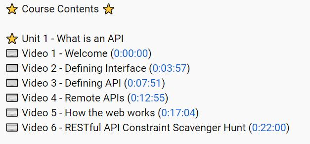
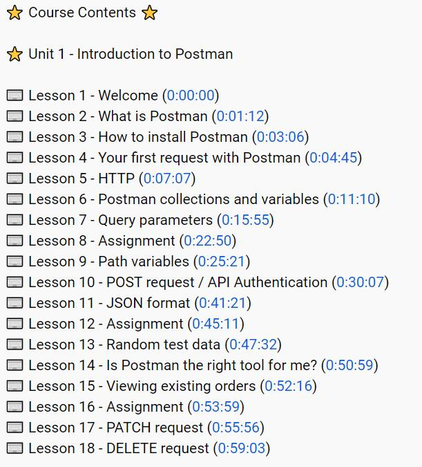
Query Parameter is used to filter what API returned, usually by pointing out the field’s value of returned json.
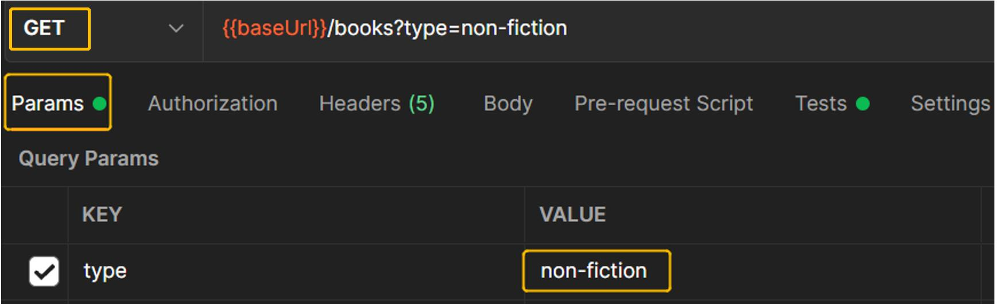
If we want to check/test data of the returned Body, we could filter them in the Tests tab (won’t change the returned Body, but filter in the “Tests” tab).
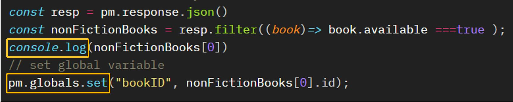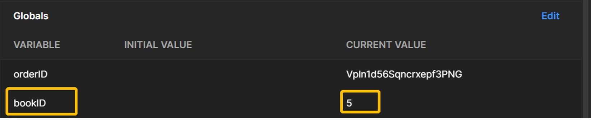
One of the advantage of using POSTMAN
console.log()is that the returned Json file can be viewed in a very clear manner, since the field and value are displayed in different colors.
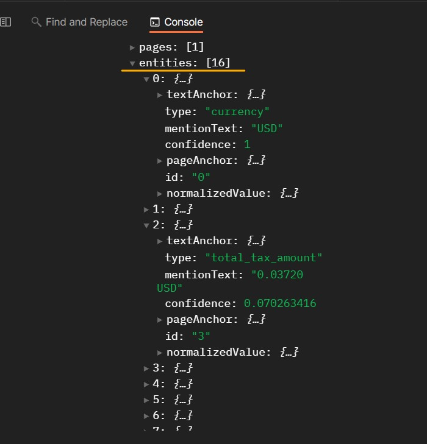
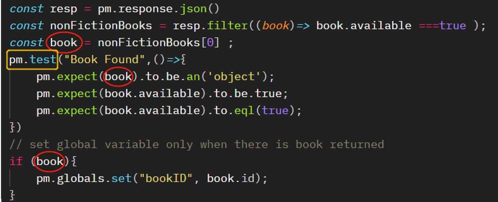
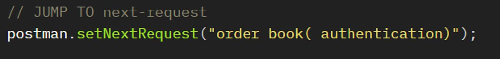
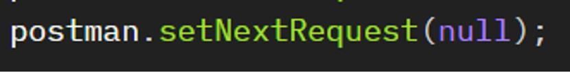
Using POSTMAN requires different authentication from using python code which uses Service Accounts and its json key, additional setups are needed to perform:
1. Register POSTMAN as Authorised redirect URIs (web applications)
2. Register postman as Authorised domains
3. Add scope for specific API
Setup Steps :
Go to Google Cloud Platform and sign in your Google account, select the Project you are in.
Go to APIs & Services and then to Credentials > Create OAuth Client ID
Select Web application for Application type and enter either https://oauth.pstmn.io/v1/browser-callback or https://oauth.pstmn.io/v1/callback for Authorized redirect URLs. This ensures the auth flow works for Postman on both desktop and web. Once you hit Create you will see Client ID and Client Secret - those two values are important (do NOT share with anyone) and we will need them later in Postman.
Next go to OAuth consent screen and enter oauth.pstmn.io for Authorised domains. For Scope, and for Google cloud API, https://www.googleapis.com/auth/cloud-platform
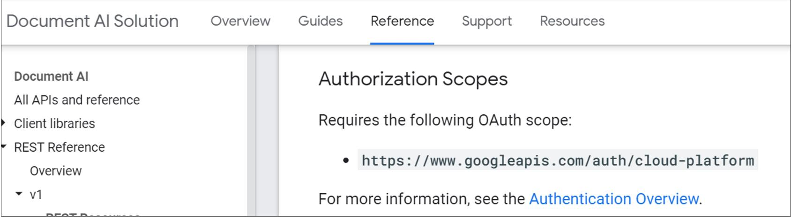
5. Go to postman, and edit the collection for the project. In Authorization tab > Type, choose oAuth 2.0, the go down to Configure New Token, fill in the information and click Get New Access Token.
https://accounts.google.com/o/oauth2/authhttps://accounts.google.com/o/oauth2/tokenhttps://www.googleapis.com/auth/cloud-platform Then it will open up a web browser window asking for your authentication.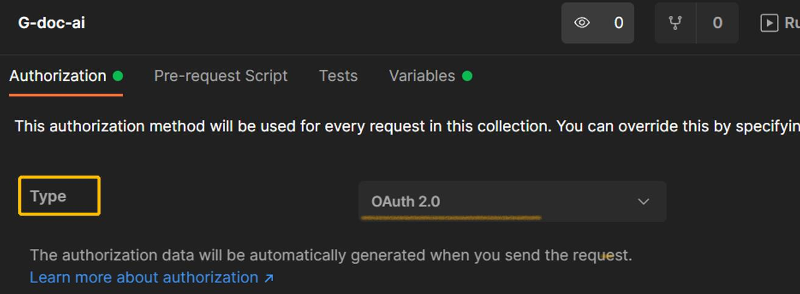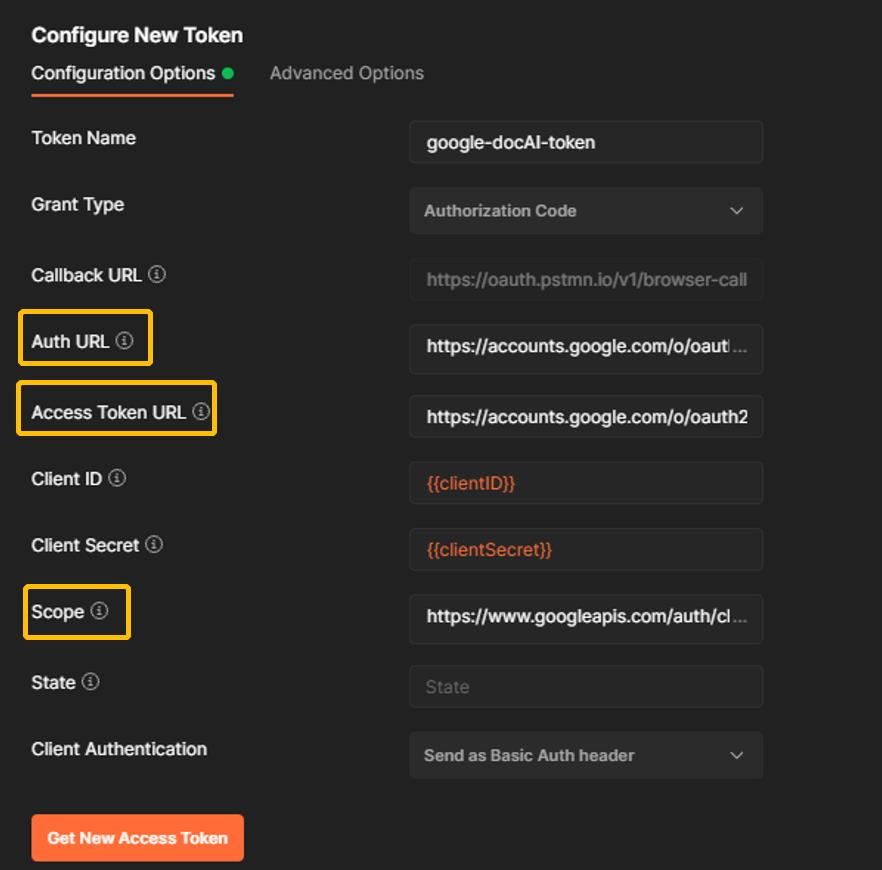
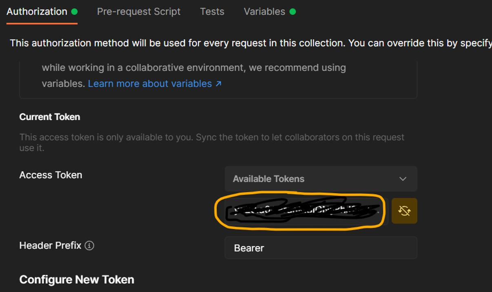
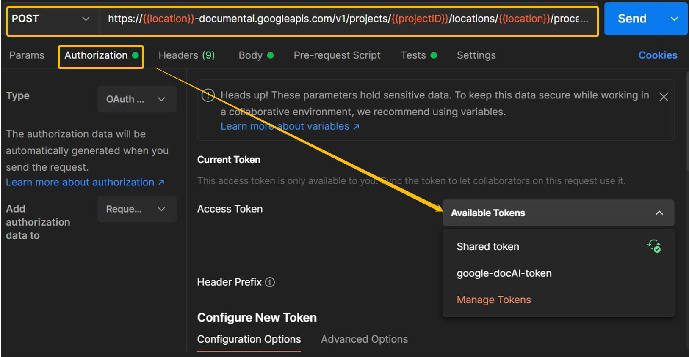
check official reference
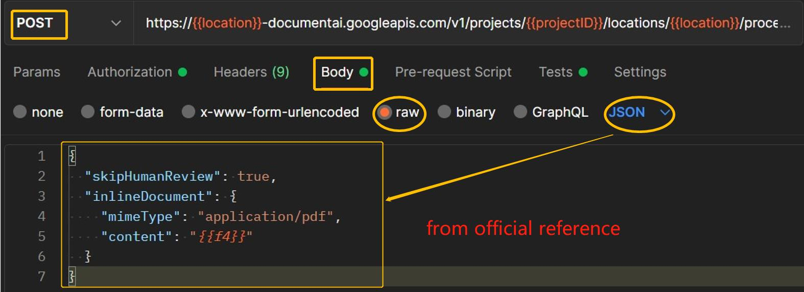
POST
https://LOCATION-documentai.googleapis.com/v1/projects/PROJECT_ID/locations/LOCATION/processors/PROCESSOR_ID:process {
"skipHumanReview": true,
"inlineDocument": {
"mimeType": "application/pdf",
"content": "{{f4}}"
}
}Human Review means Human In The Loop processor which enables human verification and corrections to ensure accuracy of data extracted by Human in the Loop processors before it is used in critical business applications. It provides a workflow and UI for humans (referred to as labelers in HITL) to review, validate and correct the data extracted from documents by Human in the Loop processors.mimiType is talking about the file formats DOC AI supports:'application/pdf' ,'application/json', 'image/tiff', 'image/gif'.content we need pass base64 encoding (ASCII string) of binary image data into JSON representations. Google also has its recommended ways to do it from which my code also borrowed the core.import base64
# Pass the image data to an encoding function.
def encode_image(image):
image_content = image.read()
return base64.b64encode(image_content)
f4 ="CI0000000041.pdf"
file_dir ="C:/V/Google AI doc/invoice_parser/"
PDF_PATH = file_dir + f1 # Update to path of target document
text_dir = file_dir +'base64.txt'
# encode
with open(PDF_PATH, "rb") as image:
content = encode_image(image)
# get content and use it in POSTMAN
with open(text_dir,"wb") as f:
f.write(content)
A good way to adduce the content(
{{f4}}) is to save it as a global variable
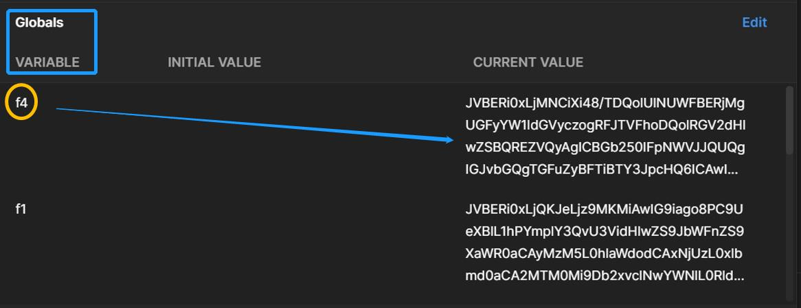
To evaluate this API’s performance on images of commercial invoice in customs clearance, I tested over 50 samples(.pdf or .tif files) using python code as below. The output will be in format of .xlsx for the convenience of further calculation of the confidence interval for population average accuracy rate.
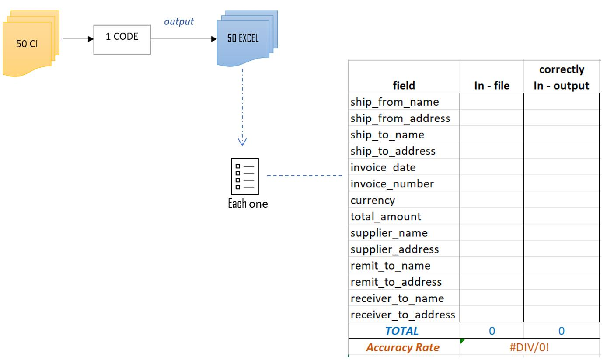
import os
import pandas as pd
pd.set_option('max_colwidth', None)
pd.set_option('display.max_columns', None)
"""
refer to https://cloud.google.com/document-ai/docs/send-request#documentai_process_document-python;
function : to extract feilds relavent to logistic business
"""
from google.cloud import documentai_v1 as documentai
def process_document_sample(
project_id: str, location: str, processor_id: str, file_path: str
):
# You must set the api_endpoint if you use a location other than 'us', e.g.:
opts = {}
if location == "eu":
opts = {"api_endpoint": "eu-documentai.googleapis.com"}
client = documentai.DocumentProcessorServiceClient(client_options=opts)
# The full resource name of the processor, e.g.:
# projects/project-id/locations/location/processor/processor-id
# You must create new processors in the Cloud Console first
name = f"projects/{project_id}/locations/{location}/processors/{processor_id}"
with open(file_path, "rb") as image:
image_content = image.read()
"""
Read the file into memory.
'mime_type' can be 'application/pdf', 'image/tiff', 'image/gif', or 'application/json'
document = {"content": image_content, "mime_type": "image/tiff"}
"""
#chose the right mime_type
if file_path[-3:] =="pdf" :
mime ='application/pdf'
elif file_path[-3:] =="tif":
mime = "image/tiff"
else:
print("mime_type not recognizable")
# Read the file into memory.
document = {"content": image_content, "mime_type": mime}
# Configure the process request
request = {"name": name, "raw_document": document}
# Recognizes text entities in the PDF document
result = client.process_document(request=request)
document = result.document
print("Document processing complete.{}\n". format(file_path))
# customized Fields to Commercial Invoice of logistic industry
entities = document.entities
not_relevant_types =['line_item','vat','total_tax_amount','receiver_tax_id','supplier_tax_id',
'supplier_iban','freight_amount', 'net_amount','supplier_email','supplier_website']
types,values,confidence = [],[],[]
# Grab relavent fields < key/value > pair and their corresponding confidence scores.
for entity in entities:
if ( entity.type_ not in not_relevant_types ):
types.append(entity.type_)
values.append(entity.mention_text)
confidence.append(round(entity.confidence,4))
else:
pass
# print in tabular format.
df = pd.DataFrame({'Type': types, 'Value': values, 'Confidence': confidence})
return df
# Google Cloud Platform info
jsonkeyDirectory = "C:\\V\\Google AI doc\\xxx"
googleProjectId = "xx-ea-XXX-XXX-gcpgogleap-xxx"
googleJsonKey = jsonkeyDirectory + "\\documentaikey.json"
location = 'eu' # Format is 'us' or 'eu'
processor_id = 'xxxxxxxxxxxxx' # Create processor in Cloud Console, here is invoice parser, and HITL disabled
os.environ["GOOGLE_CLOUD_PROJECT"] = googleProjectId
os.environ["GOOGLE_APPLICATION_CREDENTIALS"] = googleJsonKey
# Test all Samples in one direcotry
samples_dir ="C:\\V\\Google AI doc\\6. Evaluation Framework\\50 CI samples\\"
output_dir ="C:\\V\\Google AI doc\\6. Evaluation Framework\\50 CI fields output\\"
os.chdir(samples_dir)
# input each sample into processor and output a corresponding excel file.
for f in os.listdir():
file_path = samples_dir + f
# read in testing files names and test
df_fields = process_document_sample(googleProjectId, location, processor_id, file_path)
excel_name = output_dir + f[0:2]+'.xlsx' # e.g:excel name will be "01.xlsx"
df_fields.to_excel(excel_name)
print("All Files Test & Output COMPLETED !")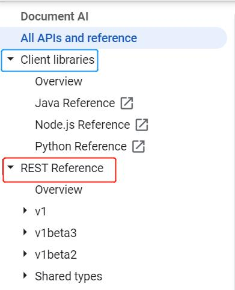
Overview
How to Guides
Reference